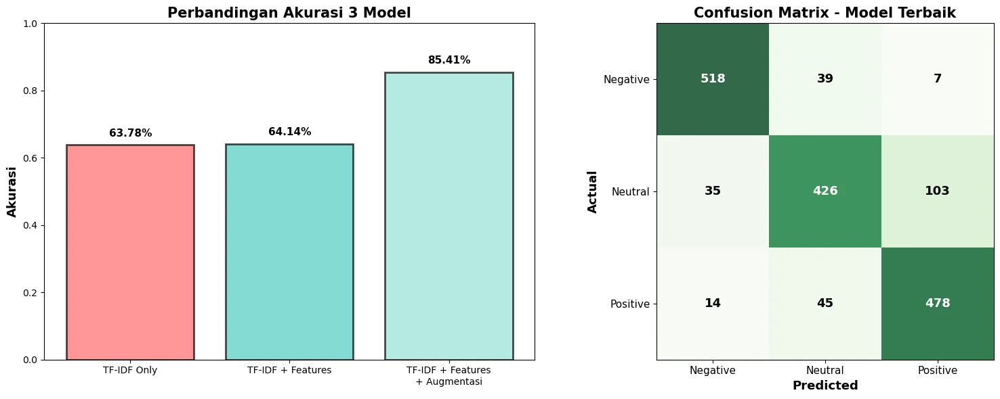

Machine learning / NLP
Tokopedia sentiment analysis
An SVM pipeline for Indonesian product reviews, exploring how preprocessing, feature engineering, and tuning affect sentiment classification.
- Created
- December 2025
- My role
- Data scientist / ML engineer
- Focus
- Making review sentiment explainable

Project Description
This project classifies Tokopedia product reviews into Positive, Neutral, or Negative sentiment using a Support Vector Machine (SVM) algorithm, with a recorded peak accuracy of 96.22% after tuning. Built with Python and Jupyter Notebooks, the project implements an Explainable AI (XAI) approach to provide transparency in the model's predictions.
The system was trained on 500 reviews across 5 different product categories (Fashion, Electronics, Food, etc.), to explore how sentiment varies across different e-commerce categories.
Notes & Reflection
One of the most fascinating parts of this project was applying Explainable AI. Instead of treating the SVM as a "black box", I analyzed the coefficients of the Linear Kernel to see exactly which keywords influenced the sentiment classification the most. It was incredibly rewarding to visualize how the model "thinks".
I also faced challenges with imbalanced data, which I tackled using Data Augmentation (Synonym Replacement and Random Insertion/Deletion) and resampling techniques. Adding behavioral feature engineering—like analyzing the intensity of punctuation (! or ?)—helped the model capture human emotion far better than standard text alone. This project significantly deepened my understanding of natural language processing and model interpretability.
Model Performance & Data Progression
To ensure the most accurate sentiment classification, the model underwent multiple iterations of enhancement, ultimately achieving a peak accuracy of 96.22%.
- Baseline (TF-IDF Only): 63.78%
- TF-IDF + Custom Features: 64.14%
- TF-IDF + Features + Data Augmentation: 85.41%
- Fine-Tuned Model (Grid Search): 96.22%
The recorded accuracy increased by 32.44 percentage points from the baseline. These notebook results compare the project’s experiments; they are not a guarantee of performance on unseen review sources.
Data Visualizations & Metrics
Below are the exported analysis graphs from the Jupyter Notebook detailing the data distributions, confusion matrices, and the progressive performance improvements.